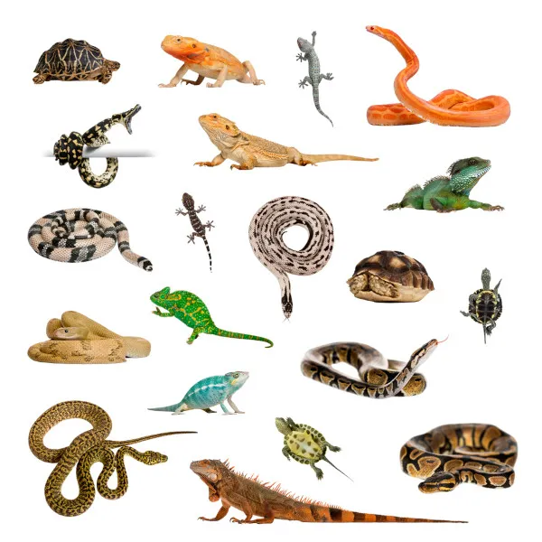

|  |
Esse grupo apresenta uma imensa variedade de animais, com formas corporais e adaptações diversas, mas que compartilham algumas características em comum, entre elas a pele grossa e impermeável recoberta por escamas, a respiração pulmonar e a presença de ovo amniótico. |
- Corpo coberto com pele seca queratinizada (não mucosa) geralmente com escamas ou escudos e poucas glândulas superficiais;
- Esqueleto interno completamente ossificado;
- Temperatura corporal variável, de acordo com o ambiente;
- Desenvolvem-se, em sua maioria, a partir de um ovo amniótico.
|